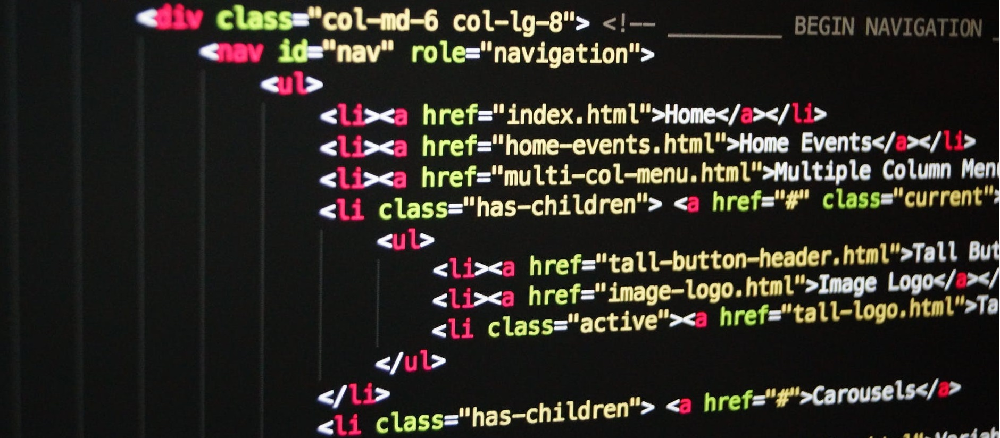

Como surgiu?

Formatar informação dos sites não é algo novo. Por volta de 1970, no começo da trajetória do SGML, já se falava em algo parecido.
Quando o HTML foi criado, a intenção não era de forma alguma, formatar informação. A medida que o HTML foi se popularizando e evoluindo, foram incluídas em suas qualidades, o domínio de controlar algumas aparências para o documento. Isso fez com que a linguagem ficasse muito complexa, mais dificil para entender e manter.
Outro problema era que os browsers tinham diferenças de implementações, o que dificultava a visualização dos sites, trazendo menos controle na navegação pela web.
Por esse tempo apareceu o salvador da pátria. Håkon Wium Lie, vendo toda essa dificuldade, resolveu criar um jeito mais fácil para formatar a informação. Foi aí que ele propôs a criação do CSS ou Cascading Style Sheets… Esse era o ano de 1994.
Módulos CSS
Como existem tantas coisas que você pode estilizar com CSS, a linguagem é dividida em módulos. Verá referência a esses módulos a medida que explora o MDN e muita das páginas da documentação são organizadas em torno de um módulo em particular. Por exemplo, poderia dar uma olhada na referência MDN para os módulos Backgrounds and Borders (en-US) para descobrir qual é o seu objetivo, e quais diferentes propriedades e outras características ele contém. Você também encontrará links para a especificação CSS que define a tecnologia.
Nesse ponto você não precisa se preocupar muito sobre como o CSS é estruturado. No entanto, isso pode tornar fácil achar informação se, por exemplo, você estiver ciente de que uma determinada propriedade provavelmente será encontrada entre outras coisas semelhantes e estiver, portanto, provavelmente na mesma especificação.
Todas as tecnologias de padrões web (HTML, CSS, JavaScript, etc.) são definidos em documentos gigantes chamados especificações (ou simplesmente "specs"), que são publicados por organizações de padrões (tais como W3C, WHATWG, ECMA, ou Khronos (en-US)) e definem precisamente como essas tecnologias devem se comportar.
Com CSS não é diferente — ele é desenvolvido por um grupo dentro do W3C chamado CSS Working Group. Esse grupo é formado por representantes de fornecedores de navegadores web e outras companhias que tem interesse em CSS. Também existe outras pessoas, conhecidas como peritos convidados (invited experts), que agem como vozes independentes; eles não são associados como um membro de alguma organização.